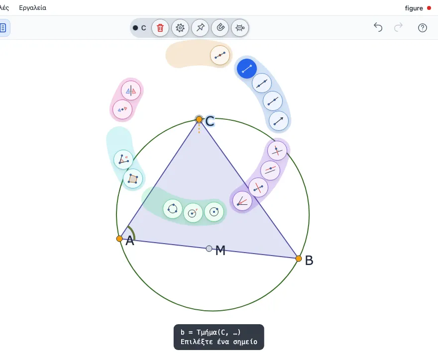

Κατασκευή με χειρονομίες
Άγγιγμα του σχήματος
| Σημείο που αγγίζεται | Αποτέλεσμα |
|---|---|
| κενό σημείο | ελεύθερο σημείο (στο δάπεδο z = 0 σε 3D) |
| κοντά σε διασταύρωση | τομή των δύο αντικειμένων, που λάμπουν όταν περνά ο δείκτης (σε λιγότερο από 24 px) |
| αντικείμενο | επιλογή και δακτύλιος των εργαλείων του |
| κενό σημείο, με ανοιχτό δακτύλιο | κλείσιμο του δακτυλίου, χωρίς νέο σημείο |
| κενό σημείο ή διασταύρωση, με ανοιχτή παλέτα | τίποτα, εκτός με το εργαλείο Σημείο |
| αντικείμενο, με ανοιχτή παλέτα | επιλογή χωρίς δακτύλιο: η παλέτα δείχνει τα εργαλεία του |
Ένα κείμενο, μια έκφραση ή ένας δρομέας απλώς επιλέγονται: δεν έχουν δακτύλιο.
Ο δακτύλιος εργαλείων

Ο δακτύλιος δείχνει μόνο τα εργαλεία που εφαρμόζονται στο αντικείμενο που αγγίχτηκε. Κάθε εργαλείο έχει πάντα την ίδια θέση· ένα μη εφαρμόσιμο εργαλείο αφήνει τη θέση του κενή. Οικογένειες, δεξιόστροφα από πάνω:
| Οικογένεια | Εργαλεία |
|---|---|
| Σημεία | σημείο πάνω σε αντικείμενο, τομή, μέσο ή κέντρο |
| Ευθείες | τμήμα, ευθεία, ημιευθεία, διάνυσμα |
| Κατασκευές | κάθετη, παράλληλη, μεσοκάθετη, διχοτόμος |
| Κύκλοι | κέντρο και σημείο, κέντρο και ακτίνα, τρία σημεία, σφαίρα (3D) |
| Πολύγωνα, γωνίες, γεωμετρικοί τόποι | πολύγωνο, γωνία, γεωμετρικός τόπος |
| Μετασχηματισμοί | κεντρική και αξονική συμμετρία, σημείου ή αντικειμένου (πολυγώνου, κύκλου…) |
Όταν ο δείκτης περνά πάνω από ένα εργαλείο, η υπόδειξη δείχνει
τη γραμμή που θα γράψει και το αναμενόμενο όρισμα:
b = Τμήμα(C, …), «Επιλέξτε ένα σημείο». Οι
ενέργειες για το ίδιο το αντικείμενο (διαγραφή, ρυθμίσεις…)
βρίσκονται στη
ζώνη περιβάλλοντος
της γραμμής.
Επιλογή των ορισμάτων
Μόλις επιλεγεί το εργαλείο, μια προεπισκόπηση του αντικειμένου ακολουθεί τον δείκτη και τα αποδεκτά αντικείμενα λάμπουν όταν περνά ο δείκτης. Όπου αναμένεται σημείο, επιλέγετε κατά βούληση ένα υπάρχον σημείο, ένα αντικείμενο (δημιουργείται σημείο πάνω σε αντικείμενο), μια διασταύρωση (δημιουργείται τομή) ή ένα κενό σημείο (δημιουργείται ελεύθερο σημείο).
- Πολύγωνο: οι κορυφές, έπειτα ξανά η πρώτη. Ένα πολύγωνο με κορυφές ελεύθερα σημεία μετακινείται ολόκληρο όταν το σύρετε, εκτός αν είναι σταθερό (Σταθερό αντικείμενο στις ιδιότητες).
- Κύκλος (κέντρο και ακτίνα): στον δακτύλιο, κρατήστε πατημένο το εικονίδιο και μετακινήστε το ποντίκι ή το δάχτυλο για να ρυθμίσετε την ακτίνα· αφήστε για να δημιουργηθεί ο κύκλος. Έπειτα, το σύρσιμο του κύκλου αλλάζει την ακτίνα.
- Γεωμετρικός τόπος: προτείνεται σε σημείο ή ευθεία που εξαρτάται από σημείο πάνω σε αντικείμενο· δημιουργείται με ένα κλικ. Για ευθεία, σχεδιάζει την περιβάλλουσά της, την καμπύλη που εφάπτεται στις θέσεις της.
- Γωνία και διχοτόμος: ένα σημείο της πρώτης πλευράς, η κορυφή, ένα σημείο της δεύτερης πλευράς.
Ειδικές περιπτώσεις
- Επικαλυπτόμενα αντικείμενα: ένα μενού δίνει τη γραμμή του καθενός· όταν περνά ο δείκτης, το αντικείμενο λάμπει. Ένα σημείο έχει πάντα προτεραιότητα, και μια διασταύρωση δίνει απευθείας την τομή.
- Με το δάχτυλο: κατά τη χρήση εργαλείου, το ακουμπισμένο δάχτυλο δείχνει την προεπισκόπηση χωρίς να μετακινεί τίποτα και επιλέγει όταν σηκωθεί. Μπορείτε να πατήσετε το εικονίδιο και να σύρετε ως τον στόχο με μία κίνηση.
- Άκρη του παραθύρου: ο δακτύλιος μετατοπίζεται ώστε να χωρά ολόκληρος, συνδεδεμένος με το αντικείμενο με μια διακεκομμένη γραμμή· ακολουθεί το αντικείμενο αν το σχήμα κινηθεί.
- Εγκατάλειψη: Esc ή το ✕ της υπόδειξης.
- Μετακίνηση: κατά τη χρήση εργαλείου, το σύρσιμο σημαδεύει· το δεξί κουμπί μετακινεί πάντα αντικείμενα και προβολή.
- Έλεγχος: ένα δεξί κλικ δείχνει τις ιδιότητες του αντικειμένου που στοχεύει, χωρίς να αφήνεται το εργαλείο και χωρίς να μετράει ως όρισμα.